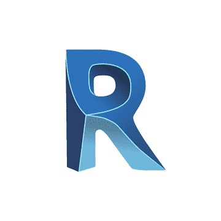

AIを活用した Revitアドイン開発
プログラミング知識ゼロでも、業務で使えるツールが作れる1
作成した機能 — Revitの「あったらいいな」を形に
作図補助
- 通り芯・レベル符号切替
- シート一括作成
- ビューポート位置コピペ
- トリミング領域コピペ
- 3Dビュー視点コピペ
- 切断ボックスのコピペ
- 塗潰し領域の分割・統合
初期作図段階などに有効
業務で使ったことのある機能
- Excelエクスポート/インポート
- 部屋タグ自動配置
既存ツールを参考に開発。
必要な機能を1つに集約
必要な機能を1つに集約
検討・確認用ビュー
- 梁天端レベル色分け
- 梁下端レベル色分け
フィルタ・文字注記・凡例を
全自動作成。一瞬で色分け図完成
全自動作成。一瞬で色分け図完成
2
開発の流れ — これまでのAI vs 今回のAI
これまでのAI
— コードを教えてくれる「相談相手」
— コードを教えてくれる「相談相手」
1
AIに
コードを聞く
コードを聞く
自分
2
AIが
コード作成
コード作成
ChatGPT
3
コピペして
ファイル作成
ファイル作成
自分
4
自分で
ビルド
ビルド
自分

5
動作確認
&修正
&修正
自分
6
自分で
配布公開
配布公開
自分
今回のAI（Claude Code）
— 実行までしてくれる「専属プログラマー」
— 実行までしてくれる「専属プログラマー」
1
チャットで
指示を出す
指示を出す
自分
2
コード作成
&アップロード
&アップロード
Claude Code
3
GitHubに
コード保管
コード保管
自動
4
自動で
ビルド&配布
ビルド&配布
自動
5
Revitで
動作確認
動作確認
自分
6
自動で
配布公開
配布公開
自動
3
使っているツール・サービス
| ツール | 役割 | 例えるなら | |
|---|---|---|---|
| Claude Code | AIにチャットで指示 → コード作成・アップロードまで自動 | 専属のプログラマー | |
| GitHub | コードの保管・バージョン管理 | クラウド上の倉庫 | |
| GitHub Actions （GitHub内の機能） |
ビルド・ZIP作成・配布を自動実行 | 24時間働くロボット | |
| Revit | アドインの動作確認・テスト | 本番環境 |
4
AIに上手く指示するコツ
小さく頼む
✗ 「全部まとめて作って」
✓ 「まずシート作成だけ」
小さい単位で動作確認しながら進める
✓ 「まずシート作成だけ」
小さい単位で動作確認しながら進める
具体的に伝える
✗ 「便利な機能を作って」
✓ 「梁を天端レベルで色分けして」
何を・どこで・どうしたいかを明確に
✓ 「梁を天端レベルで色分けして」
何を・どこで・どうしたいかを明確に
問題は状況を伝える
✗ 「動かない、直して」
✓ エラー画面やメッセージを共有
スクリーンショットを見せると効果的
✓ エラー画面やメッセージを共有
スクリーンショットを見せると効果的
5
ダウンロード・配布サイト
今日紹介したアドインは下記サイトからダウンロードできます
ダウンロードパスワード: 28tools
インストール手順・マニュアル・対応Revitバージョン（2021〜2026）の情報も掲載しています
まとめ
❶ 作図業務を効率化するツールを作成 — 興味があればぜひ使ってみてください
❷ AIを使えば「自分にはできない」と思っていたことができるようになる
❸ AIは会話だけでなく、コード作成からファイル操作・実行まで自動でやってくれる時代に
❷ AIを使えば「自分にはできない」と思っていたことができるようになる
❸ AIは会話だけでなく、コード作成からファイル操作・実行まで自動でやってくれる時代に